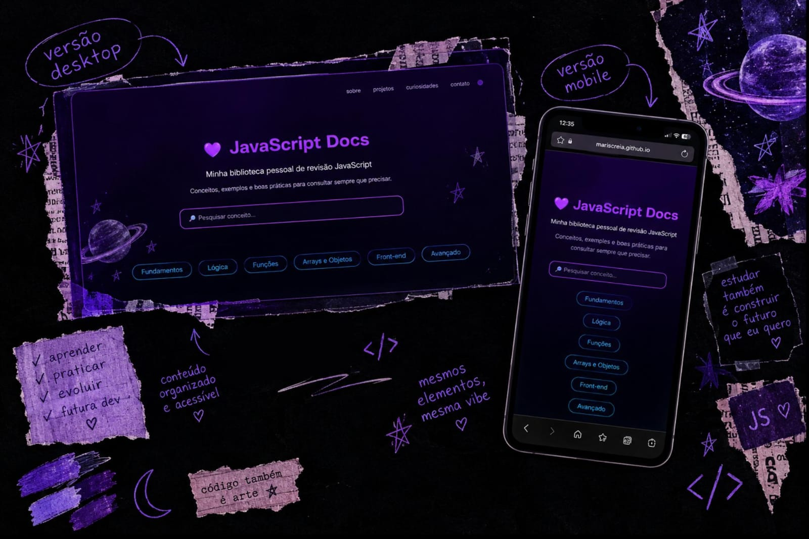

JavaScript Docs
Desenvolvimento Web - HTML, CSS e JavaScript
O JavaScript Docs nasceu de uma dificuldade que encontrei durante meus estudos: aprender e revisar JavaScript nem sempre era simples. Para tornar esse processo mais visual e fácil de consultar, reuni os principais conceitos que estava estudando em uma documentação própria, organizada como um guia de revisão.
E existe uma pequena ironia no projeto: para criar uma ferramenta que me ajudasse a estudar JavaScript, eu precisei usar JavaScript. KKKKK. No fim, a própria dificuldade acabou se transformando em uma oportunidade de praticar a linguagem de uma forma mais significativa.
Processo
Comecei reunindo e resumindo os conteúdos que estava aprendendo, organizando os conceitos em categorias como fundamentos, lógica de programação, funções, estruturas de dados, DOM e conceitos avançados. A intenção era transformar uma documentação extensa em algo que pudesse consultar rapidamente durante os estudos.
Depois, transformei esse conteúdo em uma interface de consulta, utilizando cards e páginas separadas para organizar os assuntos. Também criei uma barra de pesquisa para localizar conceitos sem precisar percorrer toda a documentação.
O JavaScript foi utilizado para tornar essa documentação interativa. A pesquisa filtra os cards conforme o usuário digita, exibindo uma mensagem quando nenhum conceito é encontrado. Também implementei uma navegação suave entre as seções e um efeito de entrada para os cards.
Mais do que criar uma página de estudos, o projeto acabou se tornando uma forma de registrar minha evolução com a linguagem. Cada novo conceito que aprendo pode ser transformado em mais uma parte da documentação, fazendo com que o projeto continue acompanhando meu aprendizado.
Tecnologias
